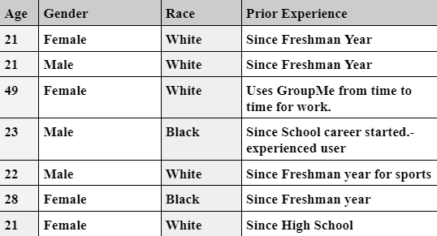

GROUPME REDESIGN

TEAM: Rami Anguiano, Bert Dishman, Zachary Lowe, Derrick Springs
Product Concept Statement and Summary
We have selected GroupMe for review as part of this assignment. GroupMe is a well-known platform used by a wide range of individuals, including students and professionals. However, the platform currently lacks compelling incentives for users due to its infrequent updates, resulting in an underwhelming user experience. Even with the most recent update, which was seemingly released just a week or two ago, there remains substantial room for improvement. Our goal is to enhance this platform by introducing new features to make it more user-friendly and contemporary. We aspire to become an indispensable part of your network, right in your pocket.
GroupMe promotes itself as "The easy way to connect with all the groups in your life, big and small." While this may have been true at some point, the rapid pace of technological advancement has left GroupMe lagging behind current standards. When compared to other communication-based apps like Discord and Slack, GroupMe falls short in terms of innovation and useful features. Its outdated messaging mechanisms provide little incentive for users to choose this platform, resulting in a lackluster user experience. From a user experience perspective, difficulties arise when attempting to send multiple photos, voice messages, and conduct conference calls. Additionally, the platform only allows for the sending of 30-second videos. It is challenging to navigate and search for specific chats or keywords within conversations. Unlike many other instant messaging apps, GroupMe lacks the ability to edit or delete messages in real time. Our objective is to enhance and modernize GroupMe's features to deliver a more fluid and contemporary user experience.
RESEARCH
The research method required by this assignment was to recruit a small group of users and to interact with the product using the Context Inquiry Method. We had a total of 7 users ages ranging from 21-49 years old.
User Search Tasks:
Start a group and invite other participants to the group?
How to pin and archive a chat on mobile?
Demographic Information
We have a quite diverse demographic with a collective Age range of 21 to 49 years old. The majority of our participants do have some type of experience with GroupMe, and most if not all of them got associated with the app due to School.

Interview
During the interviews most of the people being interviewed used Group me for work or school. Everyone will not be using Group Me outside of work or school. This is not the first app people use for communication. Each person that was interviewed thought that Group Me is a simple app to use. Most of the users interviewed want more customization in the app.
The way we structured our jam board/WAAD was in line with how we asked our participants. So demographic -> GroupMe History -> Other apps used to communicate-> uses outside school/work -> opinions on current design-> improvements. Lastly just random observations from user tasks. Ranging from the device they used to the speed of completion of the task. At first, we put all our notes onto the board and then kept the non-repetitive notes. Then to make this efficient we kept the most crucial data and organized them with certain keywords.
WAAD
ANALYSIS
We consolidated user needs and extracted design requirements using specific usability heuristics.
Individual Evaluations
Group Evaluations

Prototyping
was the sole team member with some prior experience in Figma, which made me the primary contributor to the prototyping tasks. I opted for Figma since it was the most accessible platform for the rest of the team.
WIREFRAMING

LOW FIDELITY
HIGH FIDELITY
FEEDBACK/REFLECTIONS
Engaging in this assignment highlighted the dynamic nature of group work, replete with both advantages and challenges. Initially, we faced some difficulties, but as we engaged in discussions, we developed a shared understanding, enabling us to outline a plan and delegate tasks. One notable issue we encountered was individuals occasionally meddling with the work assigned to others, creating some friction. Managing time effectively also presented its challenges, but through teamwork and open dialogue, we successfully navigated these hurdles.
A significant obstacle I encountered personally was the scarcity of relevant feedback within the group. None of my group members had a background in UXD, making it challenging to gather applicable insights during the design process. To compensate, I conducted extensive research on mobile apps and basic mobile UI design. Nevertheless, I recognized the limits of my design capabilities. As this represents my second project, it has become evident that there is much I have yet to learn. I am eager to explore additional tools and resources to advance my proficiency in the design process.
WORKS CITED
Amiana, D. (2020, June 17). General principles of design — Don Norman’s principles. Medium. https://uxdesign.cc/general-principles-of-design-don-normans-principles-4e2d97267905
GroupMe | Group text messaging with GroupMe. (2018). GroupMe. https://groupme.com/en-US/
Nielsen, J. (2020, November 15). 10 Heuristics for User Interface Design. Nielsen Norman Group. https://www.nngroup.com/articles/ten-usability-heuristics/